Class 3 Lab: Working with US Census Decennial 2020 Data
Fall 2025 | Instructor: Stephen Metts | PGUD 5160 - CRN 2247
Preamble
In this third demonstration lab, we will repeat the project setup phase of the 2nd week (setting the working directory to lab_3) then move along to accessing US Census data, followed by visualizing census data for both NY State and NYC. This lab can and should be used in conjunction with this week’s assignment 3 deliverable - Assignment 3.
Data
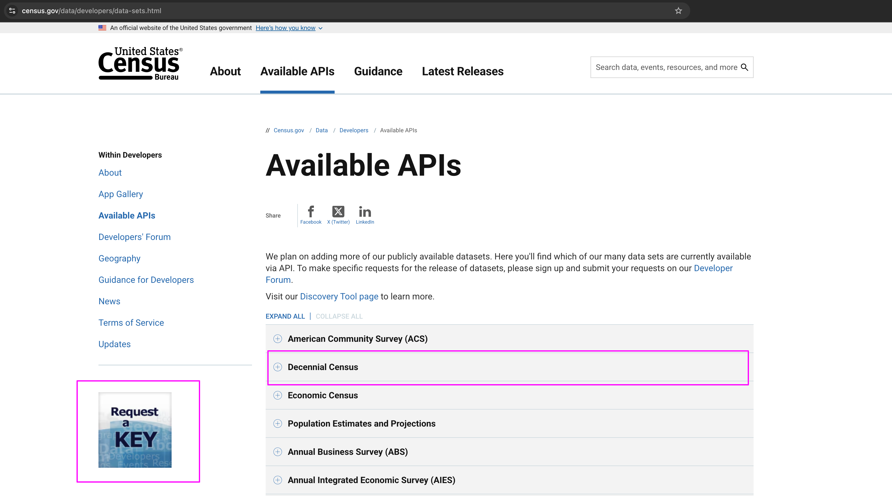
At the census developer’s endpoint overview, note that there is a Request a KEY button at the left side of the webpage; also available directly HERE. This will bring you to a entry form in which you will state your email address and for the organization you can simply state your own name. Make sure to click the terms box and ensure you have access to this email address immediately, as the US Census will deliver your key via the entered email address.
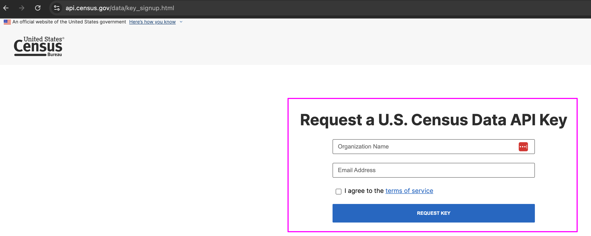
Quickly navigate to your email address and find the email from the US Census; note the key seen in the following image (magenta box):
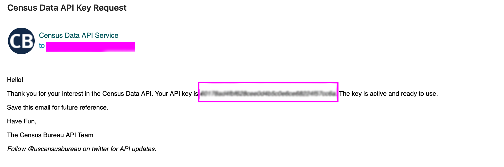
Here is a quick definition of an API key:
An API key, or Application Programming Interface Key, is a unique alphanumeric code used to identify and authenticate a user or application when making requests to an API. It functions as a credential, similar to a username and password, but specifically for programmatic access to a service.
Make sure to copy your API key for safekeeping. You can always generate a new key; and we will also install the key so that all R sessions will have access to it until you change it at some point in the future.
Step 1: Project Management in RStudio for lab_3 (also applicable for assignment_3)
With the census API key secured, we will set up a lab_3 project directory just as we did for lab_2. In fact, you can simply copy/paste the lab_2 directory, delete all the files therein and set the now lab_3 project directory via Existing Directory. We will assume the location will be ~/Desktop/lab_3/; and the structure will be as follows:
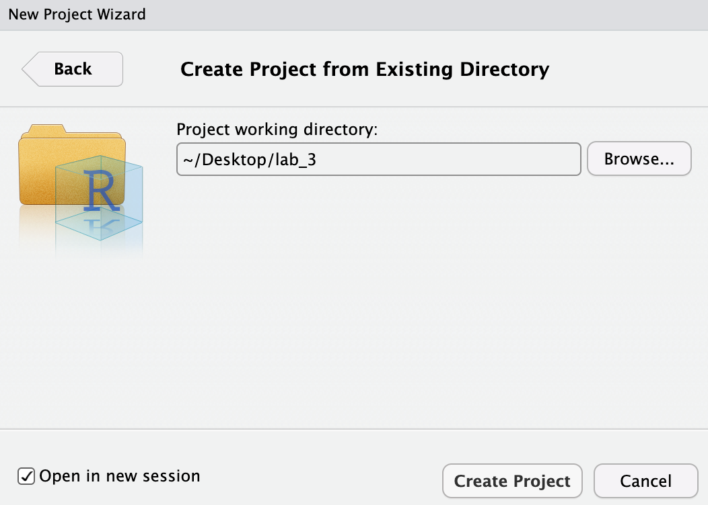
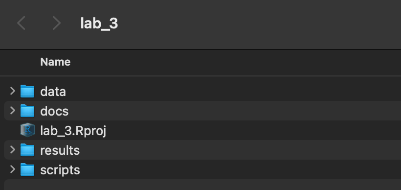
A well-organized folder structure within an RStudio project is crucial. Common conventions include:
data/: For raw data (treated as read-only).
docs/: For documentation or R Markdown files.
results/: For outputs and generated results.
scripts/: For R scripts and analysis pipelines.
docs/: For documentation or R Markdown files.
Step 2:
With the lab_3.Rproj established and the subdirectories for our data analysis established, we can move along to working on the code steps for US Census Decennial 2020 data.
- Download the Class 3 Lab 3 R Script; open this script into your current working environment. You can also save this easily in your newly created
scripts/subdirectory.
To start, it makes sense to check that indeed our project is located correctly in the directory we’ve established:
and
This should return the expected lab_3 project directory.
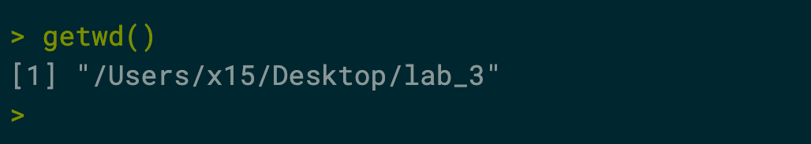
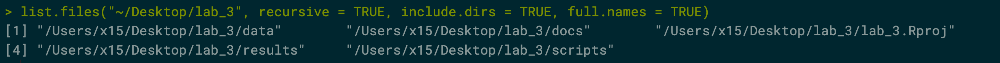
Your ‘upstream’ path will likely be different than Users/x15… if you are using macOS, your full path would be akin to /Users/your_machine_name/Desktop/lab_3. This is fine; we want to simply make sure that the directory we created - lab_3 is indeed the directory in which and from which we are and will be working.
This lab, like the course generally, utilizes macOS file path conventions. Windows users need to adjust for this difference between their OS conventions and macOS. Windows utilizes the opposite ‘backward’ slash convention as well as naming explicitly the drive location: Windows: C:\Users\username\Desktop\lab_3 Linux/macOS: /Users/username/Desktop/lab_3
Step 3:
Unlike labs and assignments thus far, this week we will begin to augment base R with packages:
In R, packages are fundamental units for organizing, sharing, and reusing R code, data, and documentation. They are essentially collections of functions, data sets, and compiled code conveniently bundled together to extend the capabilities of base R.
Argubably, the most important package in R is known as tidyverse:
The tidyverse is an opinionated collection of R packages designed for data science. It is not a single package but rather a suite of packages that work together harmoniously, sharing common data representations, syntax, and a consistent philosophy for data analysis.
For US Census work, a closely aligned subsequent package is aptly called tidycensus:
tidycensus is an R package that allows users to interface with a select number of the US Census Bureau’s data APIs and return tidyverse-ready data frames.
A tidyverse-ready data frame is referred to as a tibble:
A tibble in R is a modern, reimagined version of the traditional data.frame object, designed to be more consistent and user-friendly, particularly within the tidyverse ecosystem. While functionally similar to data frames in representing tabular data (rows as observations, columns as variables), tibbles introduce several key behavioral differences and enhancements.
to get started, we first install packages. For this week’s lab, we will need tidycensus, tidyverse and a package for extending aesthetics called ggthemes.
Navigate to File>Open File and point to the c3_labs3-script.R that you should have already downloaded and placed into the scripts subdirectory. The c3_labs3-script.R has all the necessary code declared in the lab to follow.
There are two ways to install packages. First, one-by-one; alternatively all determined by a character vector:
or
We will choose the first option so that we can watch what each package downloads before moving along to the next:
Step 4:
Next, we call the three libraries into the working session:
Step 4:
Towards the top of the lab_3 script, you will find the following code chunk for installing your census API key:
To start, replace "YOUR API KEY GOES HERE" with your actual code delivered to your email. Next, let’s adapt the key so that its installed into the R environment in a more permanent manner so that you don’t have to repeatedly declare your key every time you make a census data call. To do this adapt the code chunk as follows:
census_api_key(“YOUR KEY”, install = TRUE))
Check the Console and find the following command, which you can run to initiate the key and begin working:
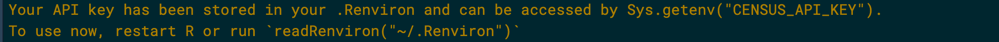
Step 5:
With our project directory set up for lab_3 and necessary packages and our API key installed, we can now make the first US Census call via the tidycensus package. Like all packages, specific functions and syntax are utilized to determine specific parameters. To start with tidycensus we want to know what variables are available and what exactly are the themes these variables represent. We can do that first in the pl file and then in the dhc file of the decennial census 2020:
pl_variables <- load_variables(2020, "pl")
dhc_variables <- load_variables(2020, "dhc")
view(pl_variables)
view(dhc_variables)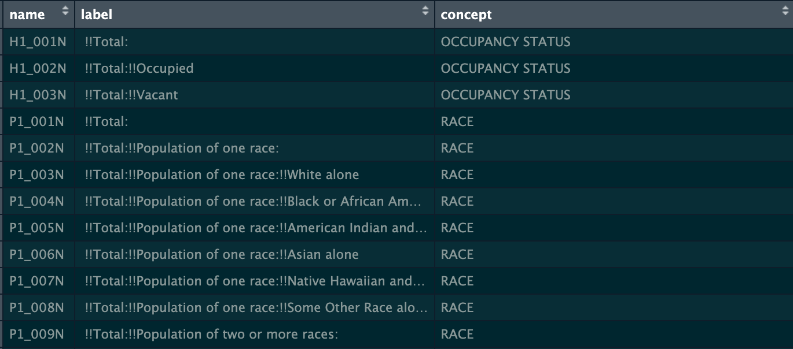
We will structure the first call with tidycensus with the following parameters:
- geography = state level
- variables = Total population (P1_001N)
- year = 2020
- specific file = pl
census calls via tidycensus can fail - particularly on wifi vs more stable ethernet connections - especially when the geometry coupled with the data is declared. In this lab, we are calling the data without geometry so the chances are lower that a failed return will result. However, if errors are reported, and the data is unable to return, the following script and backup data endpoint can be utilized to load the lab backup data after it is uncompressed.
code line for loading uncompressed data; use setwd() as needed:
load("ny_housing.RData"); load("ny_population.RData"); load("pop_data.RData"); load("race.RData"); load("urban_rural.RData")the tidycensus package is very well maintained and has invaluable guidance documentation, particularly useful in establishing your API calls. Access HERE
Follow the call by viewing the head:
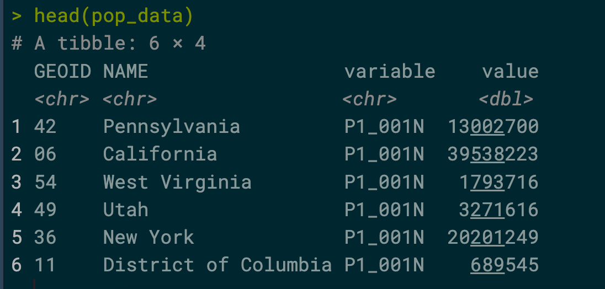
Next, we will use base ggplot which is bundled with tidyverse to show the results of the API call for state populations. Note the %>% operator - the first time we’ve used this critical tidyverse capability:
The
%>%operator, also known as the pipe operator, is a widely used feature in the R programming language, particularly within the Tidyverse ecosystem. It originates from themagrittrpackage. Its primary function is to chain together a sequence of operations by taking the output of one function or expression and passing it as the first argument to the next function in the chain. This creates a more readable and intuitive flow for data transformations and analyses, resembling a “pipeline” of operations.
pop_data %>%
ggplot(aes(x = reorder(NAME, value), y = value)) +
geom_col() +
coord_flip() +
labs(title="Population by State, 2020") Next, we will make a call on the dhc file which has a rural and urban designation:
For the 2020 Census, an urban area is a densely settled territory that meets specific population and housing density thresholds. A core cluster of census blocks must encompass one of the following to qualify:
A minimum of 2,000 housing units.
A population of at least 5,000 people.
Urban areas can include adjacent land uses, like residential or commercial areas, as long as they meet the required density criteria.
urban_rural <- get_decennial(
geography = "us",
variables = c("P2_002N","P2_003N"),
year = 2020,
sumfile = "dhc")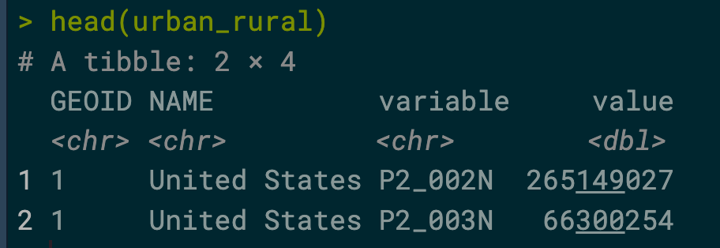
Next, we pass urban_rural tibble to a mutate function to rename the variables to Urban and Rural, then to ggplot with parameters for the plotting:
Step 6:
With some practice with first calling census data and then plotting the results, we will move along to another geography at the state level.
ny_population <- get_decennial(
geography = "county",
variables = "P1_001N", # Total Population
state = "NY",
year = 2020, #desired decennial year
geometry = FALSE #no need for spatial data for a bar chart
)We will clean up the resulting county names with the following code. Note here that we utilize $ to first declare the dataframe, then the specific column upon which to run the code. this code substitutes the declaration with ““, or rather nothing, and just returns the resulting county name alone:
Finally, for the population value, we reorder this value from large to small (decreasing) for a size-sequence plot:
Now we are ready to plot, this time with just base R, not utilizing our installed packages:
barplot(
height = ny_population$value,
names.arg = ny_population$NAME,
main = "Total Population of New York State Counties (2020 Census)",
xlab = "County",
ylab = "Total Population",
col = "skyblue", #optional: Set bar color
las = 2, #rotate x-axis labels vertically for readability
cex.names = 0.7 #adjust label size if needed
)Next, we can utilize the same input data, but create a new version of the plot using ggplot:
ggplot(ny_population, aes(x = reorder(NAME, value), y = value)) +
geom_col(fill = "#56B4E9") +
coord_flip() +
scale_y_continuous(labels = scales::comma) + # Format y-axis with commas
labs(
title = "New York County Populations (2020 Decennial Census)",
subtitle = "Source: U.S. Census Bureau",
x = "County",
y = "Total Population"
) +
theme_classic() +
theme(
plot.title = element_text(face = "bold"),
axis.text.y = element_text(size = 8)
)Step 7:
For the final component of this week’s lab, we will turn to race categories collected via the US Decennial Census 2020. To start, we need to address GEOID structures. We will have discussed these during this week’s lecture, and here we will apply their specifications to the geography call. We will also do a version of this process in the class 3 assignment.
To start, note the following GEOID codes for the 5 counties (boroughs) of NYC:
- Bronx =
36005 - Kings (Brooklyn) =
36047 - New York (Manhattan) =
36061 - Queens =
36081 - Richmond (Staten Island) =
36085
We will also be using the following 8 named variables:
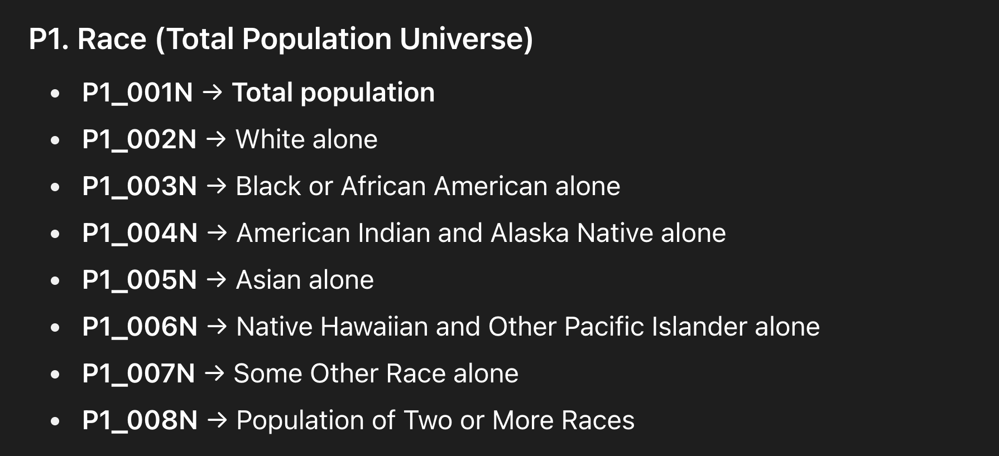
First we define and name the columns is a character vector:
race_vars <- c(
Total = "P1_001N",
White = "P1_003N",
Black = "P1_004N",
American_Indian = "P1_005N",
Asian = "P1_006N",
Pacific_Islander = "P1_007N",
Other_Race = "P1_008N",
Two_or_More_Races = "P1_009N"
)Next we declare a new dataframe race. Note that we choose the wide output which is part/parcel of the tidyverse optimized structure:
race <- get_decennial(
geography = "county",
variables = race_vars,
state = "NY",
year = 2020,
sumfile = "pl", # Specify the Redistricting Summary File
output = "wide" # Get data in a wide format
)Now we filter down all NY state counties to just the 5 NYC boroughs using the GEOID specific to each borough:
The next code chunk does a fair amount of work by first calculating percentages for each race category; create a new naming variable for the boroughs for legibility in the final plot, also setting and ordering the race names to the factor format:
nyc_race_pct <- nyc_race %>%
# Select relevant columns and calculate the percentage for each race
mutate(
White_pct = White / Total,
Black_pct = Black / Total,
American_Indian_pct = American_Indian / Total,
Asian_pct = Asian / Total,
Pacific_Islander_pct = Pacific_Islander / Total,
Other_Race_pct = Other_Race / Total,
Two_or_More_Races_pct = Two_or_More_Races / Total
) %>%
# Select only the borough name and percentage columns
select(NAME, ends_with("_pct")) %>%
# Reshape from wide to long format for plotting
pivot_longer(
cols = ends_with("_pct"),
names_to = "Race_Category",
values_to = "Percentage"
) %>%
# Rename NAME column to Borough and clean up the Race_Category names
mutate(
Borough = case_when(
NAME == "Bronx County, New York" ~ "The Bronx",
NAME == "Kings County, New York" ~ "Brooklyn",
NAME == "New York County, New York" ~ "Manhattan",
NAME == "Queens County, New York" ~ "Queens",
NAME == "Richmond County, New York" ~ "Staten Island",
TRUE ~ NAME
),
Race_Category = str_replace(Race_Category, "_pct", "") %>%
str_replace_all("_", " ") %>%
# Reorder the levels of race categories
factor(levels = c(
"White", "Black", "Asian", "American Indian", "Pacific Islander",
"Other Race", "Two or More Races"
))
)Before proceeding to the plot, we’ll review the resulting structure:
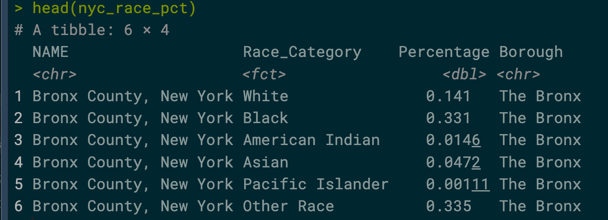
head(nyc_race_pct)Next, the plot will be performed:
ggplot(nyc_race_pct, aes(x = Borough, y = Percentage, fill = Race_Category)) +
geom_bar(stat = "identity", position = "fill") +
labs(
title = "Racial Composition of NYC Boroughs (2020 Census)",
x = "Borough",
y = "Percentage",
fill = "Race Category",
caption = "Source: 2020 US Decennial Census, PL 94-171"
) +
scale_y_continuous(labels = scales::percent) +
theme_fivethirtyeight() + # Use a clean, readable theme
theme(
plot.title = element_text(hjust = 0.5, face = "bold"),
axis.title.y = element_text(face = "bold"),
legend.position = "right"
)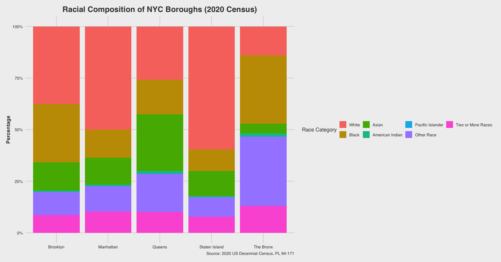
With main section of the lab_3 complete, we can save any of the dataframes that have been developed for use at a later point. The following code shows both saving the reloading the NY county raw race data prior to wrangling and reshaping that dataframe.
Extra Section - Housing Data (time permitting)
Thus far in the lab, we have been working with population variables, not housing variables.
The Census Bureau collects and releases both population and housing data together to provide a comprehensive overview of the nation’s demographics and housing trends. This data is found in the Demographic and Housing Characteristics File (DHC). Items in the file:
- The total number of housing units.
- The number of occupied housing units.
- The number of vacant housing units.
- Characteristics of housing, such as whether a home is owned or rented and the type of structure.
In the next tidycensus API call, both occupied and vacant variables are collected per NY state county in the wide format. It is often the case that dataframes will be either reshaped in the longer format or the wider format depending on the specific purpose
pivot_longer():
Converts data from wide to long format. It takes multiple columns and “pivots” them into two new columns: one containing the original column names (now as values representing the measurement type) and another containing the corresponding values.
pivot_wider():
Converts data from long to wide format. It takes a column containing measurement types and a column containing values, and “pivots” them to create new columns for each measurement type, with the corresponding values filling those columns.
ny_housing <- get_decennial(
geography = "county",
variables = c(
occupied = "H1_002N",
vacant = "H1_003N"
),
state = "NY",
year = 2020,
output = "wide")Next, the data is reshaped to the long format prior to plotting:
ny_housing_long <- ny_housing %>%
pivot_longer(
cols = c(occupied, vacant),
names_to = "status",
values_to = "count"
) %>%
group_by(NAME) %>%
mutate(percentage = count / sum(count))Finally, utilzing ggplot, with the ggthemes package to set the style to theme_minimal():
ggplot(ny_housing_long, aes(x = reorder(NAME, -count, sum), y = count, fill = status)) +
geom_bar(stat = "identity", position = "stack") +
labs(
title = "Vacant vs. Occupied Housing Units in New York State Counties (2020)",
x = "County",
y = "Number of Units",
fill = "Housing Status"
) +
scale_fill_manual(values = c("occupied" = "steelblue", "vacant" = "orange")) +
theme_minimal() +
theme(axis.text.x = element_text(angle = 90, hjust = 1, vjust = 0.5)) + scale_y_continuous(labels = scales::comma)Concluding Remarks
In this third demonstration lab, we moved past base R functions alone, including several valuable packages that work well for accessing, wrangling and visualizing US Census data. In this week’s third assignment, many of the steps we’ve covered here will be explored further for a specific purpose at the census tract level in New York City. Access this lab as needed for review and preparation for assignment 3.